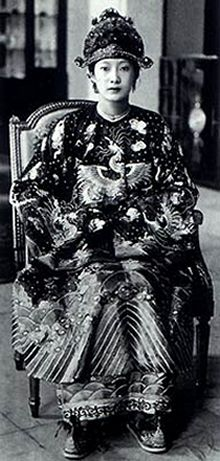

Chương 3
Cuối năm 1940, khi quân đội Nhật tiến vào miền Bắc Việt Nam, cuộc chiến tranh chưa có ảnh hưởng gì lớn tới nước An Nam lúc đó. Hoàng hậu Nam Phương và các con bà vẫn tiếp tục sống ở Đà Lạt. Sau đó, bà lại về Huế. Cho đến tháng 7 năm 1944 khi mọi quan hệ trực tiếp của triều đình nhà Nguyễn với chính quốc bị cắt đứt, chiến tranh Pháp - Nhật có thể xảy ra, gia đình hoàng hậu Nam Phương đã chuyển lên sống hẳn ở Đà Lạt trong biệt thự của ông gọi là dinh Ba, nơi trước đây mỗi lần lên Đà Lạt nghỉ hè, gia đình bà đã ở.

.Biệt điện có hai tầng: tầng trệt dùng làm nơi hội họp, yến tiệc, tiếp khách ngoại quốc và quan chức chính phủ Hoàng triều Cương thổ. Gồm có các phòng: làm việc, tiếp khách thân mật, khánh tiết, phòng bí thư riêng ở ngay cửa ra vào, phòng vui chơi của công chúa và hoàng tử.
Phía ngoài dinh, bên trái là hầm rượu của vua nằm chìm dưới đất, cửa vào trông ra phía đồi thông. Xung quanh khu vực dinh là những rừng cây rậm rạp.
Lầu hai là phòng ngủ của vua Bảo Đại, hoàng hậu Nam Phương cùng các phòng của thái tử Bảo Long, các công chúa Phương Mai, Phương Liên, Phương Dung và hoàng tử Bảo Thắng. Phía ngoài phòng ngủ của vua và hoàng hậu là lầu vọng nguyệt thật đẹp. Đó là nơi mà những lúc thư giãn khi đêm về, hoàng đế và hoàng hậu cùng ngắm trăng.
Không khí ở đây thật nhẹ nhàng tươi mát, yên tĩnh lạ lùng, khác hẳn khung cảnh trong Đại Nội - Huế. Nơi đó ồn ào náo nhiệt, khí hậu oi nồng, nóng nực về mùa hè, ẩm thấp về mùa mưa.
Các hoàng tử và công chúa rất thích cuộc sống nơi đây. Chúng thấy dễ chịu về thời tiết, về không gian và cả về cách sống. Chúng không bị quá gò ép trong khuôn khổ, quy tắc của triều đình mà được phát triển tự do hơn. Tuy thế, sống bên cạnh người mẹ tình cảm, quan tâm đến con cái nhưng nghiêm khắc nên chúng biết điều phải làm và không thể hư hỏng được. Chúng được gần gũi với cuộc sống của các bạn bè hơn, tiếp xúc với cảnh thiên nhiên nhiều hơn. Hàng ngày, ngoài giờ học và luyện tập thêm, các công chúa hoàng tử vui đùa thoải mái, chạy nhảy khắp trong vườn, hái hoa bắt bướm.
Phương Dung bé nhất trong ba chị em gái, thỉnh thoảng lại làm nũng:
Chị Phương Mai ơi, chị bắt giùm em con bươm bướm vàng này với, cây cao quá, em không với được.
Chị không lấy được đâu, nhỡ với không được, ngã vào vườn hồng của mẹ, làm nát cây hoa mẹ sẽ mắng đấy.
Ứ ừ, chị phải giúp em cơ.
Rồi lại tiếng Phương Dung vui mừng ríu rít:
Ôi! Chị ơi, em bắt được con bướm vàng đây rồi! Thích quá, ôi! thích quá!
Sau đó, vuốt ve âu yếm cánh bướm trên tay, Phương Dung thì thầm cùng bướm:
Bướm ơi, hãy ở lại đây chơi với chị nhé, chị sẽ buộc dây vào cánh bướm rồi sẽ cùng bướm dạo chơi tung tăng trong vườn hồng của mẹ chị.
Những đứa trẻ cứ bi ba bi bô thoải mái như vậy giữa thiên cảnh làm gì mà hoàng hậu Nam Phương không thấy vui.
Rồi tiếp đến là việc quyết định trường học cho các con. Nam Phương quyết định cho Bảo Long đi học ở trường Les Oiseaux của Công giáo như bà trước đây khi còn nhỏ. Học sinh của trường này hầu hết là con em các gia đình người Pháp hay châu Âu có cơ hội hay điều kiện sống ở đây. Còn lại là một số người Việt nhưng là con cái của những người thật giàu hay có địa vị cao trong xã hội như quan chức hay thượng thư.
Nhờ có sức mạnh của gia đình bà Nam Phương, từ ông bà ngoại cho đến cha mẹ đẻ là những người có đầy đủ về mặt tài chính (họ cho đất và bỏ tiền xây dựng) lại có quan hệ mật thiết với Giáo hoàng Pierre XI, sau đó là Giáo hoàng Pierre XII nên việc thành lập trường Les Oiseaux ở Đà Lạt đã được chấp thuận một cách nhanh chóng. Thời gian đầu Bảo Long học ở trường Les Oiseaux, sau đó chuyển sang Adran cũng do nhà thờ Công giáo bảo hộ và cũng ở Đà Lạt, dạy theo chương trình Pháp được coi là hoàn hảo nhất Việt Nam.
Mặc dù bà hoàng thái hậu Từ Cung phản đối việc để các con học ở trường đạo nhưng Nam Phương vẫn tìm mọi cách thuyết phục mẹ chồng. Cũng may trong chuyện này, hoàng đế Bảo Đại đồng tình với vợ. Bản thân ông cũng thấy không phải đắn đo gì về việc cho Bảo Long đi học trường bên đạo vì đó là trường tốt nhất thực hành nền giáo dục phương Tây.
Tuy nhiên Bảo Long là một đứa trẻ đặc biệt, một phần cũng là do môi trường sống và được nâng niu trọng vọng lúc còn quá nhỏ, anh thích sống cô độc. Đi học ở trường lớp nhưng không có bạn thân. Điều đó có lẽ cũng là do trẻ con cùng lứa tuổi đều có thái độ dè dặt xa lánh anh. Là một học sinh ngoan ngoãn, tính tình trầm lặng, khép kín, anh không buồn vì chuyện đó. Anh được các xơ yêu quý và bạn bè cảm mến.
Hoàng hậu Nam Phương hoàn toàn yên tâm về cuộc sống của các con nơi miền cao nguyên này và đặc biệt vui sướng về việc học của Bảo Long và kết quả học tập, rèn luyện của con.
Những buổi chiều thời tiết đẹp, mấy mẹ con dạo chơi trong những rừng thông đẹp tuyệt vời. Hoàng hậu Nam Phương kể cho các con nghe những câu chuyện cổ tích, huyền thoại, những chuyện về đức Chúa Jesu, về đức Mẹ Đồng trinh. Lời mẹ nhẹ nhàng tha thiết xen lẫn tiếng gió thổi man mát từ những rặng thông đã làm cho hoàng tử Bảo Thắng và công chúa Phương Dung ngủ thiếp trên tay chị giúp việc lúc nào không biết nữa.
Từ khi lên sống ở đây, hoàng hậu cũng cảm thấy lòng nhẹ nhõm hơn. Ít nhất là bà và các con tạm xa cuộc sống chốn cung đình, thế giới trong Tử Cấm thành gần giống như một trại tập trung, một thời gian lúc tình hình chiến sự có thể xảy ra.
Nhưng cuộc sống yên bình nơi đây không được lâu. Những người lính Nhật đã bắt đầu có mặt trên các ngọn đồi Đà Lạt. Bà đau lòng khi nghĩ rằng không khí hòa bình và thanh thản ở nơi đây và cuộc sống yên ổn của hàng triệu người dân An Nam sẽ bị đảo lộn và chiến tranh có thể bắt đầu...
2.
Trong tình hình rối ren của đất nước, lòng bà lại một lần nữa đau đớn, tim bà lại nhỏ máu khi biết tin người chồng yêu quý của mình lại có chuyện trăng hoa. Trong lúc bà dồn hết tâm lực lo cho công việc triều chính, vấn an mẹ chồng, gồng mình nuôi dạy giữ gìn con cái tại cung điện Đại Nội - Huế cũng như tại Đà Lạt khi cuộc chiến tranh có thể bùng nổ bất cứ lúc nào, Bảo Đại đã làm quen và gặp gỡ một vũ nữ nổi tiếng phương Bắc tên là Lý Lệ Hà. Chính Vĩnh Cẩn, người anh em họ của Bảo Đại, người đã suốt đời tận tụy với Bảo Đại, đã giới thiệu Lý Lệ Hà đến gặp Bảo Đại tại Sài Gòn. Tuy đã có chồng nhưng là một phụ nữ đẹp lại thừa kinh nghiệm trong quan hệ tình ái, làm sao cô ta lại không làm cho Bảo Đại không xiêu lòng vì cô được. Nói về cô vũ nữ Lý Lệ Hà, trong một báo cáo mật của Sở Mật thám Pháp có ghi: Năm 1932, Lý Lệ Hà quê ở Hải Phòng, đường Lạch Tray, được mọi người quen gọi là Thông. Thời đó, cô ta sống bằng nghề buôn phấn bán hương, nổi tiếng về sắc đẹp quyến rũ. Khoảng năm 1934 hay 1935, cô ta trú tại một nhà hát cô đầu ở khu phố Quán bà Mau, Hải Phòng. Năm sau, cô ta lên Hà Nội và tiếp tục làm gái nhảy cho một vũ trường ở phố Khâm Thiên của một mụ chủ nổi tiếng là Đốc Sao. Có nhiều người theo đuổi nhưng cô ta cũng biết phân phát ân huệ để đổi lấy quà biếu hay tiền mặt trong khi vẫn đi tìm đối tượng tâm đầu ý hợp...
Đau khổ quá khiến bà lần này câm lặng. Bà thẫn thờ nhớ lại những kỷ niệm chồng vợ trong suốt mười năm qua. Mười năm lúc nào cũng có nhau, cùng hoạt động đối ngoại, cùng bàn bạc những công việc của vương triều và ông bao giờ cũng tỏ ra tôn trọng bà, cùng vui chơi giải trí thể thao, âm nhạc, cùng đi săn... vui buồn đều có nhau. Là người phụ nữ cá tính, có bản lĩnh, có điều kiện kinh tế độc lập đầy đủ, bà không sợ khi phải một mình đương đầu với cuộc sống. Nhưng là Đệ nhất phu nhân, bà rất buồn khi nghĩ chính vợ chồng bà sẽ làm trò cười cho thiên hạ. Còn đâu là những hình ảnh đẹp đẽ về một cặp vợ chồng lý tưởng, thủy chung và hiện đại! Song đấy cũng chưa phải là điều gì đáng kể. Cái lớn lao hơn là trong tình hình bất ổn của đất nước, đáng lẽ ông và bà phải cùng nhau chung lưng đấu cật để lo việc đại sự, trấn an đội ngũ quan lại trong triều đình cũng như thần dân đất nước. Vậy mà bà càng cố gắng về phần mình, càng mong ông làm việc tốt hơn để không bị chê trách điều gì thì bản thân ông lại hành động ngược lại. Thay vì tìm đến bà như trước đây để có được những lời khuyên đúng lúc trong những giờ phút gay cấn, ông lại lao vào cuộc tình với Lý Lệ Hà.
Bà không trách ông mà tự trách mình. Bà không bao giờ ân hận là mình đã đẻ quá dày vì trong vòng bảy năm bà sinh cho ông năm đứa con. Tuy nhiên dù gì chăng nữa sức khỏe của bà cũng giảm sút, sắc đẹp cũng phôi phai ít nhiều. Hơn nữa trong vòng mười năm hạnh phúc đó, tình cảm vợ chồng là tốt đẹp nhưng tình yêu mà bà đã nhầm tưởng không thể tách rời có lẽ cũng phai nhòa bởi cuộc sống cung đình đầy bụi bặm, cằn cỗi, bởi những quan hệ căng thẳng, xung đột nội tâm về tín ngưỡng giữa bà với mẹ chồng, với những người xung quanh. Tất cả những cái đó đã làm cho bà ngày càng trở nên xa cách, lạnh lùng và thiếu cởi mở.
Trước đây mỗi lần có chuyện vui, buồn, không nói được với ai, bà thổ lộ hết với chồng để mong tìm thấy sự cảm thông, chia sẻ hầu vợi bớt nỗi buồn lòng. Nhưng nay, ông đã như vậy, bà như không còn muốn nói gì nữa. Bà mặc cảm. Tuy nhiên, trước mặt con cái và những người xung quanh, bà cố tỏ ra như không có chuyện gì xảy ra, như không biết gì, cố tỏ ra thanh thản, cố chịu đựng để che đậy tâm trạng đau khổ cùng cực. Bà âm thầm chịu đựng nỗi xót xa cay đắng. Đó là bản tính của bà nhưng đồng thời bà cũng nghĩ không nên làm ầm ĩ mà có thể bà sẽ gần gũi ông hơn, phần giúp ông lấy lại thăng bằng sau những thất vọng bị giám sát, o ép quá nhiều của chính quyền thuộc địa, phần cố gắng giữ hình ảnh của một cặp vợ chồng lý tưởng trong con mắt người dân An Nam, ít nhất là vào lúc tình hình chính trị phức tạp giữa một bên là Nhật, một bên là Pháp.
Rồi cục diện chiến tranh đã thay đổi. Ngày mồng 9 tháng 3 năm 1945, trong khi Bảo Đại và Nam Phương đi săn cách Huế chừng vài cây số, Nhật đảo chính Pháp. Cuộc đảo chính này đã không thay đổi gì đến cuộc sống riêng của nhà vua, không làm ảnh hưởng đến cuộc sống của hoàng hậu Nam Phương cũng như của các con bà. Cũng bởi vì từ mấy năm trở lại cho đến thời điểm đó, Bảo Đại ít tiếp xúc với giới quan chức thuộc địa, chán chường vì những cải cách của ông bị hỏng hoặc bị xuyên tạc.
Có lẽ vì quá bất mãn với sự can thiệp quá sâu của chính quyền Pháp, Bảo Đại đã chấp nhận nền độc lập mà người Nhật trao trả. Ông Đại sứ nước Nhật Yokoyama, người đã cùng vợ đi lại và quan hệ với Bảo Đại từ lâu sẽ là cố vấn tối cao của chính phủ Việt Nam độc lập. Để đảm bảo tính dân chủ, Bảo Đại thông báo cho Hội đồng cơ mật và tất cả đều nhất trí hoan nghênh. Vậy là một bản tuyên bố độc lập được Phạm Quỳnh thảo ra dựa trên các ý chính là tuyên bố Việt Nam độc lập, xóa bỏ các hiệp ước đã ký với Pháp và chính phủ Việt Nam độc lập sẽ hợp tác thân thiện với chính phủ Nhật Bản để cùng nhau xây dựng khối thịnh vượng chung Đại Đông Á. Lúc đầu Phạm Quỳnh được chỉ định quyền thủ tướng nhưng xét thấy ông ta là một trong những hình ảnh quá thân Pháp, vì vậy Trần Trọng Kim đã được nhắc tới. Đó là một nhà sử học, nhà giáo. Bảo Đại cố tìm những người có uy tín để làm việc trong hoàn cảnh thay thầy đổi chủ. Nhà vua đã mời được những nhà trí thức có danh tiếng lúc bấy giờ để lập một chính phủ mới gồm có: Trần Trọng Kim (thủ tướng), Trần Văn Chương (bộ Ngoại giao), Lưu Văn Lang (bộ Giao thông), Vũ Ngọc Anh (bộ Y tế), Hồ Tá Khanh (bộ Kinh tế), Nguyễn Hữu Thi (bộ Tiếp tế), Trịnh Đình Thảo (bộ Tư pháp), Trần Đình Nam (bộ Nội vụ), Hoàng Xuân Hãn (bộ Giáo dục), Phan Anh (bộ Thanh niên), Vũ Văn Hiền (bộ Tài chính).
Chính phủ mới tập hợp được những con người đang được dư luận chú ý nhưng dù sao đó vẫn là con bài của phát xít Nhật. Chính phủ Trần Trọng Kim vẫn sẽ là chính phủ bù nhìn. Chính vì vậy có những người được đưa vào chính phủ vẫn còn e ngại, dè dặt, không thực sự có cảm tình với Bảo Đại.
Và dù muốn hay không bà Nam Phương vẫn phải theo quyết định của vua và Hội đồng cơ mật. Chính phủ mới được thành lập ngày 17 tháng 4 năm 1945 nhưng vì phải chờ các vị tân bộ trưởng tập trung đông đủ nên ngày mồng 8 tháng 5 mới chính thức ra mắt tại Huế trong Tử Cấm Thành.
Tại điện Kiến Trung, vua Bảo Đại và hoàng hậu Nam Phương đã chờ sẵn. Hôm đó Bảo Đại mặc áo dài lam bằng sa tanh, giày thêu, còn Nam Phương mặc áo dài đỏ và quần trắng. Họ mở sâm banh chúc mừng tân thủ tướng và các bộ trưởng như phong tục Tây phương. Hoàng hậu Nam Phương tỏ ra cởi mở, thân ái thăm hỏi gia đình từng người khiến họ rất cảm động.
Bà hiểu tâm trạng của chồng khi nghe ông trả lời các nhà báo: Thời Pháp thuộc, tôi không nói được gì, không được tự đi đâu. Nhưng bây giờ thì từ khắp nơi trong nước các đại biểu đến nhiệt tình bày tỏ sự ủng hộ đối với chính phủ mới. Tôi rất sung sướng. Và bà ủng hộ ông.
3.
Tuy nói là thỏa mãn với chính phủ mới như vậy nhưng khi có cùng một lúc ba bộ trưởng xin từ nhiệm, một bộ trưởng bị nạn vì bom Mỹ chỉ sau mấy tháng Chính phủ ra mắt quốc dân, Bảo Đại chấp nhận nhưng giao cho thủ tướng bổ nhiệm các bộ trưởng mới còn bản thân ông tiếp tục đi săn. Không những đi săn, ông còn nhiều lần rong chơi trong những cánh rừng thưa trong không gian tình tứ lãng mạn với bà cố vấn Nhật Yokoyama, một phụ nữ Pháp xinh đẹp.
Trong khi đó, hoàng hậu Nam Phương lại lo lắng về chiều hướng phát triển của tình hình. Bão táp cách mạng đang xô đến làm thay đổi tận mọi ngõ ngách của cuộc sống. Bà triệu tập ông Phạm Khắc Hòe, tổng lý ngự tiền văn phòng đến gặp. Bà chỉ còn biết tâm sự bàn bạc với ông, người mà bà coi là một bầy tôi tâm phúc, trung thực của hoàng triều, một vị quan am hiểu thời cuộc, không xu nịnh, luôn một lòng vì dân vì nước. Trước đó, chính bà là người đã đề đạt với ông khâm sứ và thỉnh cầu đức vua nhiều lần để cất nhắc ông Hòe từ chức quan quản đạo Đà Lạt lên ngự tiền đổng lý văn phòng. Trong những ngày nước sôi lửa bỏng đó, bà đã khuyến khích ông Hòe tìm cách liên lạc với các chiến sĩ cách mạng để tìm kiếm lời khuyên, rồi phân tích, khuyên giải hoàng đế thoái vị.
Bà hỏi ông Hòe về tình hình đang xảy ra trên đất nước, bà than vãn về đức vua vẫn mải chơi, say mê cờ bạc, săn bắn, trai gái hơn là công việc của triều chính. Bà buồn lòng về chồng vẫn chứng nào tật ấy, không hề thay đổi.
Trong tình hình ấy, khi tờ tuyên bố Việt Nam độc lập còn chưa ráo mực, chính phủ mới thành lập này đã bị cách mạng đánh đổ.
Thừa thế thất bại của phát xít Đức năm 1945, những cuộc tấn công của Hồng quân Liên xô vào các đội quân của Nhật, Đại hội toàn quốc họp tại Tân Trào (tỉnh Tuyên Quang) vào tháng 8 năm 1945 cùng với sự tham gia của sáu mươi đại biểu từ khắp ba miền của đất nước, đã thông qua một chương trình mười điểm của Việt Minh, quyết định thành lập Ủy ban Giải phóng Dân tộc do Hồ Chí Minh lãnh đạo và thông qua quốc kỳ, quốc ca.
Khi vua Bảo Đại đi săn về, mặc dầu rất buồn nhưng hoàng hậu Nam Phương nén lòng để cùng ông bàn bạc đại sự:
Thưa ngài, em thấy tình hình có vẻ thay đổi đến nơi. Việc lập nội các mới trong khi Nhật Bản đầu hàng đến nơi xem ra là không thuận. Vậy ý ngài thế nào?
Từ trước đến nay, ta vẫn mơ ước một đất nước tự do theo chế độ quân chủ lập hiến như ở Anh quốc để không phải phụ thuộc vào bất kỳ một thế lực nào cả. Vì thế ta cố gắng duy trì chế độ quân chủ. Nhưng điều đó có lẽ không dễ.
Thưa ngài, phong trào cách mạng đang ào ào như vũ bão. Việc duy trì nền quân chủ lúc này có lẽ là ảo tưởng. Ngài có nhớ cuộc cách mạng Pháp năm 1789 không? Số phận bi thảm của vua Louis XVI và hoàng hậu Marie Antoinette đã được định đoạt. Em thấy sợ. Có lẽ ta không nên chờ nước đến chân rồi mới nhảy.
Bảo Đại trả lời Nam Phương, giọng mỉa mai:
Không lẽ quân đội Nhật sẽ khoanh tay ngồi nhìn để cho dân chúng làm gì thì làm?
Ngày 15 tháng 8 năm 1945, sau khi nhận được thông báo nước Nhật đầu hàng Đồng minh, cả Bảo Đại và Nam Phương tuy ngạc nhiên nhưng không hề sốc, họ không ngờ Nhật Bản lại đầu hàng quá sớm.
Trước khí thế đi lên của cách mạng trong cả nước, là người nhạy cảm với thời cuộc, hoàng hậu Nam Phương đã kiên nhẫn vận động nhà vua thoái vị. Tất nhiên việc làm này của bà là có sự bàn bạc với ông Phạm Khắc Hòe.
Ngày 17 tháng 8 năm 1945, vua Bảo Đại gửi thông điệp đến những người đứng đầu các nước Anh, Mỹ, Trung quốc và Pháp, kêu gọi giúp đỡ để bảo vệ nền độc lập giành được từ tay Nhật. Trong thông điệp gửi Đại tướng Pháp De Gaulle, ông viết:... Tôi nói với nhân dân nước Pháp, nơi tôi đã sống thời niên thiếu, tôi muốn nói với tư cách một người bạn, chứ không phải người đứng đầu nhà nước. Các vị đã đau khổ quá nhiều trong bốn năm đầy tang tóc dưới chế độ chiếm đóng, nên không thể không hiểu rằng dân tộc Việt Nam có hai mươi thế kỷ lịch sử đầy vinh quang trong quá khứ, không muốn và không thể chịu đựng được nữa bất kỳ một sự đô hộ nào của nước ngoài. Các vị sẽ hiểu rõ hơn nếu các vị có thể chứng kiến những sự kiện đang diễn ra ở đây, thấy rõ ý nguyện độc lập của nhân dân Việt Nam đã ấp ủ tận đáy lòng và không một sức người nào có thể kìm nén được. Ngay dù các vị có thể lập lại trên đất nước này sự thống trị của Pháp thì cũng không có ai nghe theo: mỗi làng sẽ là một ổ kháng chiến, mỗi người cộng tác cũ của các vị sẽ là một kẻ thù, và các quan chức, các kiều dân Pháp sẽ chỉ đòi thoát khỏi bầu không khí nghẹt thở này. Mong các vị hiểu rằng cách duy nhất để cứu vãn quyền lợi của Pháp và ảnh hưởng tinh thần của nước Pháp là thẳng thắn thừa nhận nền độc lập của Việt Nam, từ bỏ mọi ý nghĩ lập lại chủ quyền hoặc bất cứ một hình thức cai trị nào của nước Pháp trên đất nước này. Chúng ta có thể dễ dàng thỏa thuận với nhau nếu các vị từ bỏ ý định trở lại làm ông chủ của chúng tôi...
Tháng 8 năm 1945, sự sụp đổ của Nhật kéo theo sự tan rã của chính phủ Trần Trọng Kim. Tổng khởi nghĩa nổ ra tại những thành phố lớn. Ngày 19 tháng 8 năm 1945, nhân dân đã vùng lên giành chính quyền tại Hà Nội, ngày 23 tháng 8 tại Huế và ngày 25 tháng 8 tại Sài Gòn.
Ngày mồng 2 tháng 9 năm 1945, tại quảng trường Ba Đình Hà Nội, Chủ tịch Hồ Chí Minh đọc Tuyên ngôn Độc lập khai sinh nước Việt Nam Dân chủ Cộng hòa.
Ở Huế, sau khi chính quyền thuộc về cách mạng, chính phủ Trần Trọng Kim và triều đình phong kiến tàn tạ đã sống những giờ phút cuối cùng. Đêm 23 tháng 8 năm 1945, chính phủ cách mạng lâm thời gửi điện đề nghị Bảo Đại thoái vị.
Trước khi Bảo Đại có ý định thoái vị, cũng có những người thân cận rỉ tai ông:
Thưa hoàng thượng, nước Nhật dù thất bại vẫn là nước mạnh. Người Nhật vẫn có trách nhiệm duy trì trật tự cho đến khi Đồng minh vào tiếp nhận đầu hàng. Họ vẫn có thể giúp triều đình chống lại những người cách mạng để duy trì chế độ quân chủ.
Nhưng hoàng hậu Nam Phương lại nghĩ khác. Biết rằng tránh mọi sự chống đối cách mạng để không xảy ra đổ máu, cảnh nồi da nấu thịt, bà nhẹ nhàng khuyên ông:
Thưa ngài, em nghĩ, dù gì đi chăng nữa việc tránh một cuộc tắm máu giữa những người cách mạng và người Nhật là điều cần thiết phải làm. Và điều ấy chỉ có ngài mới là người quyết định.
Vậy là vua Bảo Đại đã ủy quyền cho bà Nam Phương bàn bạc kỹ lưỡng với ông Hòe đồng thời giao cho ông Tổng lý Ngự tiền văn phòng thảo đạo Dụ số 105 tuyên bố ý định thoái vị của ông.
Ông Phạm Khắc Hòe đã bàn bạc chu đáo kỹ lưỡng với bà Nam Phương trong quá trình soạn thảo đạo Dụ này và sau khi thảo xong, ông lại mời bà cùng đọc đi đọc lại, xem từng câu chữ vì chính ông Hòe cũng rất tin vào tri thức của bà hoàng hậu và mong bà thành công trong việc giúp vua giữ vững lập trường trong những giai đoạn về sau. Cả hai đã rất ưng ý với câu: Vì muốn củng cố độc lập cho nước nhà và bảo vệ quyền lợi của dân tộc, trẫm sẵn sàng hy sinh về tất cả các phương diện. Trẫm đặt hạnh phúc của nhân dân Việt Nam lên trên ngai vàng của trẫm. Trẫm muốn làm dân một nước độc lập còn hơn làm vua một nước nô lệ. Trẫm chắc rằng toàn thể quốc dân cùng một lòng hy sinh như trẫm.
Khi còn học ở Pháp, Nam Phương và Bảo Đại đã nghe nói nhiều đến nhà yêu nước Nguyễn Ái Quốc vì vậy ông nói nếu người đứng đầu Việt Minh là Nguyễn Ái Quốc, ông sẵn sàng thoái vị ngay.
Sau khi biết rõ lãnh tụ Việt Minh chính là Nguyễn Ái Quốc và Hồ Chí Minh cũng chính là Nguyễn Ái Quốc, vua Bảo Đại nói với hoàng hậu Nam Phương:
Không còn chần chừ gì nữa. Ta sẵn sàng trao chính quyền cho Việt Minh là tổ chức đã đấu tranh nhiều nhất cho quyền lợi của nhân dân và sẽ mời các lãnh tụ Việt Minh vào Huế thành lập nội các mới. Vấn đề chính thể sẽ do nhân dân quyết định sau. Ta cam đoan sẽ tuân theo ý nguyện của nhân dân.
Thưa ngài, em cho là ngài đã hành động đúng.
Tuy trấn an nhà vua với vẻ bình tĩnh nhưng chính bản thân hoàng hậu Nam Phương cũng lo lắng không biết được những gì sẽ xảy ra. Bà không khỏi không lo sợ quần chúng biểu tình ùa vào trong Hoàng cung và biết đâu một cuộc tàn sát có thể xảy ra.
4.
Chiều ngày 26 tháng 8 năm 1945, vua Bảo Đại làm lễ cáo yết thoái vị với tổ tiên tại Thế Miếu, có thông báo mời đầy đủ các vị trong triều đến dự nhưng chỉ có rất ít người đến. Tại điện Kiến Trung, đây là lần cuối cùng các văn võ bá quan đến bái yết vua và hoàng hậu. Mặc dù đã được chuẩn bị trước và sẵn sàng chấp nhận điều sẽ đến này nhưng hoàng hậu Nam Phương không tránh khỏi một nỗi buồn man mác khi cuộc sống của bà từ nay sẽ thay đổi hẳn. Có lẽ bà đã lặng lẽ khóc thầm khi chào lần cuối những người đã cộng sự cùng bà trong suốt mười một năm bà sống và làm việc bên họ.
Chiều ngày 30 tháng 8 trên bãi đất trống giữa cửa Ngọ Môn và kỳ đài, tập trung đông đảo các đoàn đại biểu sáu huyện trong tỉnh Thừa Thiên và các tầng lớp nhân dân kinh thành Huế. Họ đến để dự lễ thoái vị của vua Bảo Đại.
 .
.
Bà hoàng thái hậu Từ Cung
Bà hoàng thái hậu Từ Cung và hoàng hậu Nam Phương không được mời dự. Bảo Long cùng với mẹ theo dõi quang cảnh buổi lễ từ một góc cửa sổ trên điện Kiến Trung. Vì chưa bao giờ được tiếp xúc với người cách mạng thật sự, chỉ nghe đồn đại nên hoàng hậu Nam Phương không thể biết được đâu là đúng đâu là sai. Tâm trạng rối bời, những cảm xúc nặng nề xen lẫn nỗi lo âu sợ hãi, hoàng hậu Nam Phương tưởng tượng mình như là hoàng hậu nước Pháp Marie Antoinette sắp bị truy bắt rồi bị chặt đầu cùng với chồng là vua Louis XVI.
Nam Phương lặng người khi nghe chồng trịnh trọng đọc Chiếu thoái vị. Thấy ông xúc động không nói nên lời, lòng bà cũng cảm động. Đặc biệt là lúc ông thay mặt cho quân quyền trịnh trọng trao tận tay cho đại biểu chính phủ cách mạng lâm thời hai báu vật biểu tượng của quyền lực: thanh kiếm vàng nạm ngọc và chiếc quốc ấn nặng gần tám kilôgam đúc từ thời Minh Mạng, bà bỗng nấc nghẹn. Vậy là từ nay không còn vua, không còn hoàng hậu. Tuy nhiên nỗi luyến tiếc chỉ vụt qua, còn nỗi lo mới là đáng kể. Bà chỉ sợ gia đình bà sau đó sẽ không được yên ổn, sợ lịch sử sẽ lặp lại những gì đã xảy ra ở Pháp sau cuộc cách mạng.
Khi thấy cựu hoàng lặng lẽ trở về điện Kiến Trung một cách yên bình, bà không khỏi ngạc nhiên và vô cùng mừng rỡ. Vậy là ông không bị cách mạng dẫn đi sau lễ thoái vị. Vậy là họ đã không chạm đến bà và các con. Có thật vậy không và trong bao lâu? - Bà tự hỏi.
5.
Lễ thoái vị vừa kết thúc, vua Bảo Đại và hoàng hậu Nam Phương họp tất cả các gia nhân, hầu cận, thị vệ, thị nữ để thu dọn đồ đạc giao lại hoàng cung cùng tài sản công của triều đình cho chính quyền cách mạng. Đại bộ phận những người từng làm việc cho hoàng triều trở về gia đình quê hương bản quán. Vua đã thoái vị, triều đình không còn, vì thế họ không còn lý do gì để ở lại đây nữa.
Hoàng hậu Nam Phương cũng để lại tất cả những gì thuộc về triều đình. Bà đem trả lại chiếc mũ có đính chín con phượng hoàng bằng vàng. Khi kiểm kê tài sản quốc gia, người ta thấy không thiếu một thứ gì kể cả những gì là nhỏ nhất. Bà đúng là một con người trung thực đàng hoàng. Lúc vua Bảo Đại còn tại vị, người ta ca ngợi bà không chỉ là một bà hoàng xinh đẹp, dịu dàng, có lòng hảo tâm thương những người nghèo khổ, biết lo lắng cho dân mà còn là tấm lòng trong sáng, trung thực, thủy chung của bà. Nghe nói rằng không như những người khác chỉ tìm cách moi tiền của triều đình để tiêu xài hoang phí, bà Nam Phương đáng tôn vinh ở cử chỉ tiêu xài bằng tiền riêng của mình do gia đình cho. Một thói quen hiếm có không những ở Việt Nam mà còn ở các nước theo chế độ quân chủ khác nữa. Việc làm của bà đã làm cho mọi người thêm yêu mến kính trọng bà hơn.
Rất khẩn trương, chỉ sau nửa ngày, hoàng hậu Nam Phương đã hoàn thành việc thu dọn đồ đạc riêng tư của gia đình mình và cho chuyển về cung An Định, nơi trước đây là chỗ nghỉ hè của hoàng gia.
Trong lúc bà Từ Cung, bà Nam Phương và các con dọn nhà chuyển về sinh sống ở cung An Định, còn cựu hoàng Bảo Đại đang hoàn thành việc bàn giao thì ông nhận được một bức điện khẩn: Chính phủ lâm thời mời công dân Vĩnh Thụy ra Hà Nội làm cố vấn tối cao cho Chính phủ. Nếu nhận lời, sẽ có những chỉ dẫn cần thiết để ông cố vấn có thể ra Hà Nội sớm nhất. Ký tên: Hồ Chí Minh. Ông đưa bức điện cho bà Nam Phương xem, cả hai cùng lo lắng tự hỏi liệu đây có phải là một cuộc đi đày trá hình không.
Nếu ông bà đồng ý, ông sẽ ra Hà Nội, Thủ đô mới của nước Việt Nam Dân chủ Cộng hòa. Bà và các con sẽ ở lại Huế. Một cuộc chia ly chưa biết ngày gặp lại. Lần đầu tiên bà thấy nỗi lo khôn cùng vì cả hai đều chưa hiểu cách mạng sẽ đối xử với họ ra sao. May rủi là điều chưa thể lường được. Mặc dù có những việc làm tốt đẹp về phía chính quyền cách mạng như tỏ ra tôn trọng cựu hoàng, cựu hoàng hậu, đáp ứng những nguyện vọng của Bảo Đại có nghĩa là các lăng tẩm, đền miếu của các vị vua chúa nhà Nguyễn được tôn trọng, chính phủ cách mạng không phân biệt đối xử với người trong hoàng tộc, cho phép các quan lại cũ trong triều tùy theo tinh thần và khả năng được đóng góp vào công cuộc giành độc lập thống nhất và xây dựng đất nước, nhưng cả hai vợ chồng vẫn còn hoài nghi. Vả lại cuộc sống của Bảo Đại khi còn tại vị được cả một bầu đoàn thê tử chăm sóc chu đáo, giờ đây chính quyền cách mạng làm gì có người. Họ còn phải lo trăm công nghìn việc quan trọng khác. Bà hiểu Cụ Hồ và Chính phủ lâm thời còn biết bao nhiêu điều phải làm, phải lo, phải nghĩ cho dân cho nước. Chồng bà cũng chỉ là một công dân thôi. Nhưng Cụ Hồ đã nghĩ đến việc mời ông Bảo Đại cùng làm việc trong một chính phủ, có nghĩa là cụ đã có lòng tin và hiểu được sự hy sinh của vợ chồng bà vì quyền lợi của nhân dân Việt Nam. Nghĩ đến đó, bà lại thấy phần nào an lòng và cố gắng động viên ông ra đi cho dù sự chia tay đối với bà là cả một nỗi buồn trống trải. Phần thì lo cho sức khỏe của ông, công việc của ông khi không có bà bên cạnh, phần thì bà thấy chẳng yên tâm khi biết tính trăng hoa của ông lại có dịp trở lại.
Biết bao mối tơ vò trong lòng bà lúc này... Cuối cùng bà đã gạt nước mắt chuẩn bị chuyến đi cho ông.